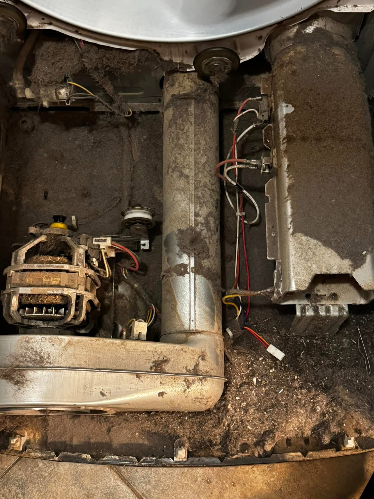
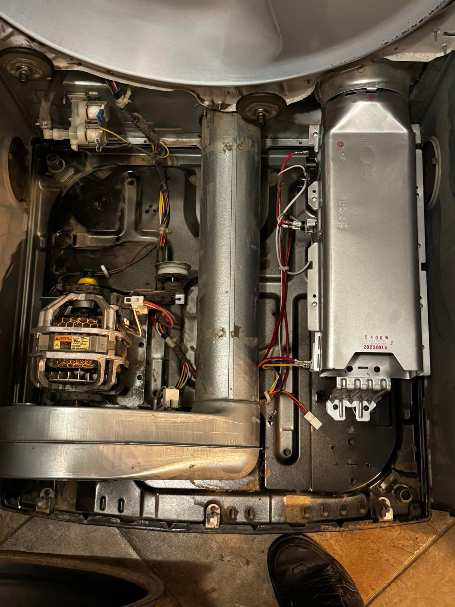
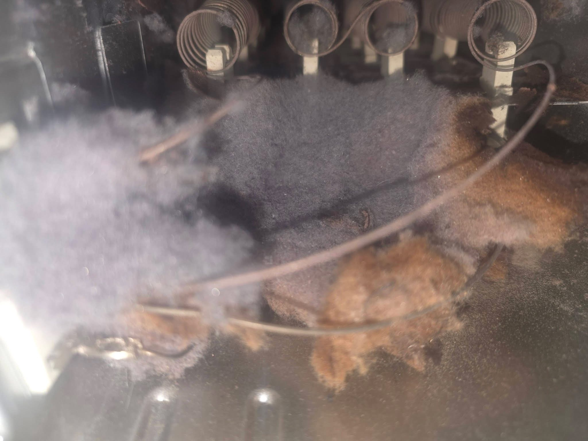
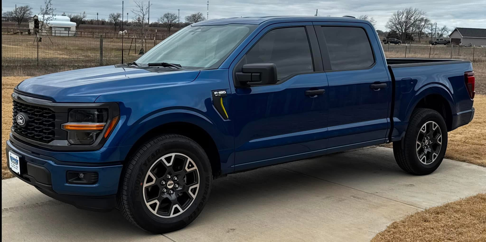

Appliance trouble? Give us a call.
Refrigerator not cooling? Dryer not heating? Tell us what is happening. Anderson's Appliance Pros handles repair and installation requests across DFW, and we will let you know how we can help.
(817) 856-9211
Texting works best while we are with another customer.
Kitchen and laundry appliances, from everyday problems to bigger repairs.
If yours is not on this list, ask anyway. We look at each request based on the appliance, the job, the parts, and your location.
Refrigerators & freezers
Cooling, leaks, ice makers, water lines, and door issues.
Washers & dryers
Drainage, heat, noise, vibration, belts, and sensors.
Ovens, ranges & stoves
Heating trouble, igniters, elements, controls, and installation.
Dishwashers
Leaks, drainage, error codes, cleaning problems, and installs.
Microwaves & vent hoods
Switches, fans, lights, and other repair requests.
Other appliances
Ice makers, disposals, wine coolers, and more.
Have the brand and model number handy? Send them along with a description of the issue. A photo can help too.
The lint you cannot see can start a fire.
The customer could not see this buildup from the outside. Inside the dryer, lint had collected around the working parts and near the heating area. That is a real fire risk and a reason to take dryer maintenance seriously.



Look closer at the heating area.
This close-up shows lint gathered near the coils that heat up when the dryer runs. Cleaning the lint screen is important, but it does not reveal everything accumulating inside the machine.
The U.S. Fire Administration reports that failure to clean was the leading factor contributing to home clothes dryer fires from 2018 to 2020. Fire safety source.You're talking to the person doing the work.
Anderson's Appliance Pros is operated by Trenton Anderson. We know it is frustrating to wait around for an appliance repair, especially when nobody will give you a straight answer. Tell us what is going on and we will talk through whether we can help, what the next step is, and when we can make it out.

A straightforward process.
Get in touch
Call or text the appliance, your city, and what it is doing.
Talk through the visit
We will discuss the job and availability. The visit fee is confirmed before scheduling.
Decide on the repair
After diagnosis, we explain the work and quote it before you approve anything.
DFW and beyond, depending on the job.
We serve the cities below and many surrounding communities. Longer trips are considered case by case, so call or text even if you are outside the immediate metroplex.
- Dallas
- Fort Worth
- Arlington
- Irving
- Plano
- Frisco
- McKinney
- Garland
- Grapevine
- Southlake
- Denton
- Lewisville
Don’t see your city? Text us your location and what needs fixing. We’ll let you know if we can come out.
A few things worth knowing.
How much is the diagnostic fee?
It varies by appliance, job, and location. We will confirm the visit fee before scheduling. If you approve the repair, the diagnostic fee is waived.
Can I reach out after 5 PM?
Yes, you can text after hours. Normal working hours are Monday through Friday, 9 AM to 5 PM. After-hours appointments may be possible case by case.
What brands do you service?
We handle many major brands. Give us the brand and model number if you have it, and we will confirm whether we can take on the job.
How soon can you come out?
That depends on the schedule, your location, and whether parts are needed. Contact us and we will give you a realistic answer.
Tell us what is going on.
(817) 856-9211
Call or text. Include your appliance and city so we can help faster.